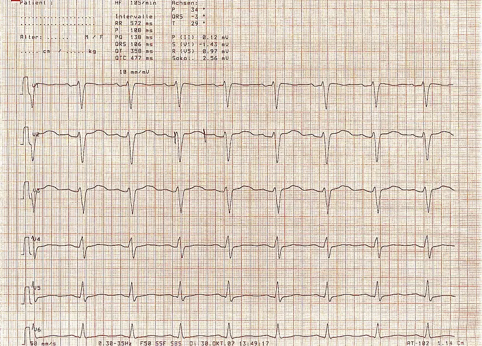

DX.1 — Dépression
Les sigles du cours sont définis dans la fenêtre des abréviations.
1. Définition
La dépression est un trouble de l'humeur. Elle associe une humeur triste ou une perte d'intérêt à un retentissement fonctionnel, pendant au moins 2 semaines (CIM-11, DSM-5-TR)12. La fatigue en est un symptôme fréquent, mais jamais le seul.
2. Épidémiologie (Suisse, puis Europe)
En Suisse, 9,8 % des 15 ans et plus déclarent en 2022 des symptômes dépressifs modérés à graves (Obsan 2022), surtout les femmes de 15 à 34 ans3. En premier recours, 18,5 % des patients fatigués sont déprimés (Stadje 2016)1. Le médecin de famille est le seul contact de 40 % des patients dépressifs (Kraxner 2023)4. Il cible donc les patients fatigués et les malades chroniques, car la dépression entraîne absentéisme et risque suicidaire.
| Indicateur (situation mesurée) | Part de la population de la ligne (%) | Population, source |
|---|---|---|
| Symptômes dépressifs modérés à graves | 9,8 % | Suisse, 15 ans et plus, enquête sur la santé 20223 |
| Symptômes dépressifs modérés à graves en 20173 | 8,6 % | Suisse, 15 ans et plus, enquête sur la santé 20173 |
| Traitement d'un problème psychique en 12 mois3 | 7,8 % | Suisse, population résidante, 2022 ; le sexe féminin est plus touché que le sexe masculin et les jeunes déclarent plus de symptômes que les personnes âgées3 |
| Dépression parmi les patients fatigués | 18,5 % | Premier recours, méta-analyse, 26 études (pays variables) ; la dépression est plus fréquente chez ces patients que chez les témoins sans fatigue1 |
| Intervalle de confiance de la dépression en premier recours | 16,2 à 21,0 %1 | Même méta-analyse de 26 études1 |
| Diagnostics psychologiques après fatigue | 16,5 % | Pays-Bas, 571 adultes, suivi d'un an2 |
| Risque de dépression au cours de la vie | 10 à 15 %4 | Monde, selon la synthèse suisse de médecine de famille4 |
| Dépression chez les malades chroniques | 9 à 23 %4 | Estimation de l'OMS citée par la même synthèse4 |
| Médecin de famille comme seul contact | environ 40 % | Patients dépressifs, synthèse suisse4 |
| Antidépresseurs prescrits par le médecin de famille | environ 50 % | Prescriptions d'antidépresseurs en Suisse, synthèse suisse4 |
3. Physiopathologie
Amorce (moléculaire). Un stress chronique, un deuil ou un terrain génétique activent l'axe hypothalamo-hypophyso-surrénalienCascade qui libère le cortisol en réponse au stress. Son hyperactivité prolongée est fréquente dans la dépression.. Le cortisol reste élevé. Les neurones perdent des facteurs de croissance, dont le BDNFFacteur neurotrophique issu du cerveau. Il soutient la survie et les connexions des neurones..
Développement (cellulaire). La transmission sérotoninergique et noradrénergique baisse dans les circuits limbiques et préfrontaux. Les cytokines inflammatoires augmentent. Ces deux voies réduisent la motivation et le plaisir.
Installation (tissulaire). L'hippocampe et le cortex préfrontal perdent de l'activité. L'amygdale devient hyperactive. Le sommeil se fragmente, avec réveil précoce et sommeil non réparateur.
Maintien (clinique). La rumination, le retrait social et l'inactivité entretiennent la baisse d'humeur. La fatigue provient du sommeil non réparateur, de la perte de motivation et de l'inflammation.
Ces mécanismes expliquent le pronostic. Les épisodes répétés augmentent le risque de rechute. Un épisode non traité peut devenir chronique. Le risque suicidaire suit la désespérance et l'impulsivité.
| Perturbation | Exploration qui la montre | Thérapeutique qui la corrige (mécanisme) |
|---|---|---|
| Baisse de la sérotonine synaptique | Aucun examen biologique ; échelle PHQ-95 | Cipralex®DCI : escitalopram. Classe : inhibiteur sélectif de la recapture de la sérotonine (ISRS) (ATC N06AB10). Groupe : antidépresseurs (ATC N06A). Chefs de file : ISRS : escitalopram, sertraline, citalopram, paroxétine, fluoxétine ; IRSN : venlafaxine, duloxétine ; NaSSA : mirtazapine ; tricycliques : amitriptyline. Indications : dépression et prévention des rechutes, trouble anxieux généralisé, trouble panique, phobie sociale, trouble obsessionnel compulsif. Posologie AIPS : dépression : 10 mg une fois par jour, maximum 20 mg ; plus de 65 ans : 5 mg au départ, maximum 10 mg ; insuffisance hépatique : 5 mg pendant 2 semaines ; traiter au moins 6 mois, Zoloft®DCI : sertraline. Classe : inhibiteur sélectif de la recapture de la sérotonine (ISRS) (ATC N06AB06). Groupe : antidépresseurs (ATC N06A). Chefs de file : ISRS : escitalopram, sertraline, citalopram, paroxétine, fluoxétine ; IRSN : venlafaxine, duloxétine ; NaSSA : mirtazapine ; tricycliques : amitriptyline. Indications : dépression légère à modérée et prévention des récidives, trouble obsessionnel compulsif, trouble panique, stress post-traumatique chronique, phobie sociale. Posologie AIPS : dépression : 50 mg par jour dès le début ; paliers de 50 mg par semaine au plus ; maximum 200 mg par jour ; insuffisance hépatique légère à modérée : réduire la dose d'au moins 50 % (dose ≤ moitié de la dose usuelle) ; Child-Pugh C : contre-indiqué : l'ISRS bloque la recapture de la sérotonine89 |
| Baisse de la transmission noradrénergique et sérotoninergique | Clinique, PHQ-9 | Remeron®DCI : mirtazapine. Classe : antagoniste des récepteurs α2 présynaptiques (antidépresseur noradrénergique et sérotoninergique) (ATC N06AX11). Groupe : antidépresseurs (ATC N06A). Chefs de file : ISRS : escitalopram, sertraline, citalopram, paroxétine, fluoxétine ; IRSN : venlafaxine, duloxétine ; NaSSA : mirtazapine ; tricycliques : amitriptyline. Indications : épisodes dépressifs unipolaires et traitement d'entretien de 4 à 6 mois. Posologie AIPS : dose efficace 15 à 45 mg par jour ; départ à 15 ou 30 mg ; arrêt progressif ; moins de 18 ans : non utilisé : il bloque les récepteurs α2 et augmente la transmission10 ; Duloxetin Sandoz®DCI : duloxétine. Classe : inhibiteur de la recapture de la sérotonine et de la noradrénaline (IRSN) (ATC N06AX21). Groupe : antidépresseurs (ATC N06A). Chefs de file : ISRS : escitalopram, sertraline, citalopram, paroxétine, fluoxétine ; IRSN : venlafaxine, duloxétine ; NaSSA : mirtazapine ; tricycliques : amitriptyline. Indications : dépression, prévention des récidives, douleur neuropathique diabétique, trouble anxieux généralisé. Posologie AIPS : dépression : 60 mg une fois par jour ; plus de 60 mg : aucun avantage démontré : il bloque les deux recaptures11 |
| Sommeil fragmenté, insomnie | Interrogatoire du sommeil | Remeron®DCI : mirtazapine. Classe : antagoniste des récepteurs α2 présynaptiques (antidépresseur noradrénergique et sérotoninergique) (ATC N06AX11). Groupe : antidépresseurs (ATC N06A). Chefs de file : ISRS : escitalopram, sertraline, citalopram, paroxétine, fluoxétine ; IRSN : venlafaxine, duloxétine ; NaSSA : mirtazapine ; tricycliques : amitriptyline. Indications : épisodes dépressifs unipolaires et traitement d'entretien de 4 à 6 mois. Posologie AIPS : dose efficace 15 à 45 mg par jour ; départ à 15 ou 30 mg ; arrêt progressif ; moins de 18 ans : non utilisé : le blocage des récepteurs H1 explique l'effet sédatif10 |
| Pensées négatives, rumination | Entretien clinique | Thérapie cognitivo-comportementale : elle corrige les distorsions de pensée |
| Inactivité, isolement | Histoire de vie, activité | Activation comportementale et exercice : ils rétablissent le renforcement positif |
4. Démarche diagnostique
Le titre est « Dépression » : il faut reconnaître l'épisode, mesurer la gravité, puis exclure ce qui l'imite. La sécurité du patient passe avant tout.
Étape 1. Drapeaux rouges : chacun impose une action immédiate.
🚩 R1. Idées suicidaires avec plan, moyens ou intentionLe risque de passage à l'acte est imminent. Il faut demander directement, sans crainte de suggérer l'idée. : ne pas laisser le patient seul, avis psychiatrique urgent
🚩 R2. Symptômes psychotiques ou stupeurLes idées délirantes, les hallucinations ou le refus de manger ou de boire évoquent une dépression psychotique ou une catatonie. Le patient est en danger vital. : hospitalisation psychiatrique
🚩 R3. Antécédent de manie ou d'hypomanieUn antidépresseur seul peut induire un virage maniaque. Le diagnostic de trouble bipolaire doit alors être évoqué ; l'AIPS impose d'arrêter l'ISRS à l'apparition d'une phase maniaque8. : recherche systématique avant toute prescription, avis psychiatrique
🚩 R4. Perte de poids involontaire, fièvre, sueurs nocturnes, adénopathiesIls orientent vers un cancer, une infection ou une maladie systémique. : examen complet et bilan ciblé (DX.5, DX.11)1
🚩 R5. Début tardif, déficit neurologique, confusion, céphalée récenteLa dépression tardive peut cacher une maladie neurodégénérative, vasculaire ou tumorale. : le médecin demande une imagerie cérébrale et un avis spécialisé
🚩 R6. Consommation d'alcool ou de substances, médicament inducteurL'alcool, les sédatifs, les corticoïdes et l'interféron peuvent causer l'humeur dépressive. : évaluer le sevrage, adapter le médicament
🚩 R7. Post-partum avec pensées de nuire à l'enfantLe risque pour le nouveau-né et la mère est élevé. : avis psychiatrique urgent
Étape 2. En l'absence de drapeau rouge, le médecin suit des étapes graduelles.
1. Le médecin dépiste : il pose 2 questions sur l'humeur et l'intérêt, puis il remplit le PHQ-9Le questionnaire compte 9 questions, scorées de 0 à 275. Un score d'au moins 10 dépiste la dépression majeure : sensibilité 0,88, spécificité 0,85 contre l'entretien semi-structuré5..
2. Il confirme par l'entretien : il compte les critères du DSM-5-TR et mesure le retentissement12.
3. Il recherche une bipolarité, un deuil, un abus de substances et un médicament inducteur12.
4. Il limite le bilan somatique aux signes de l'histoire ou de l'examen. Les examens étendus ne se justifient pas sans orientation1.
5. Il mesure la gravité : un PHQ-9 inférieur à 16 indique la forme moins sévère, et un score de 16 ou plus indique la forme plus sévère6.
6. Il choisit le traitement avec le patient, puis il réévalue à 2 semaines6.
Piège : une fatigue isolée sans humeur basse ni perte d'intérêt ne correspond pas à une dépression. Le médecin recherche alors DX.2 à DX.11.
Quatre diagnostics discriminants se distinguent de la dépression par un élément précis.
| Diagnostic | Élément qui tranche | Piège | Conduite si le résultat est positif |
|---|---|---|---|
| Trouble bipolaire | L'anamnèse retrouve un épisode passé de manie ou d'hypomanie. | Le patient ne le rapporte pas spontanément, donc il faut le demander. | Le médecin demande un avis psychiatrique et évite l'antidépresseur seul8. |
| Hypothyroïdie (DX.9) ou anémie (DX.6) | Une TSH élevée ou une hémoglobine basse révèle la cause somatique. | Une thyroïde palpable normale n'exclut pas l'hypothyroïdie. | Le médecin traite la cause, puis il réévalue l'humeur. |
| Deuil ou trouble d'adaptation | Un événement de vie identifié explique le tableau, ou les critères complets manquent. | Un deuil récent n'exclut pas un épisode dépressif. | Le médecin offre un soutien et réévalue le patient. |
| Trouble induit par une substance ou un médicament | L'anamnèse relie le début à l'alcool, aux sédatifs, aux corticoïdes ou à l'interféron. | Le patient minimise souvent sa consommation. | Le médecin traite la cause et évalue le sevrage avant d'appliquer le schéma de la dépression. |
5. Anamnèse ciblée et drapeaux rouges
L'anamnèse recherche d'abord les deux symptômes d'entrée, puis le sommeil, les idées suicidaires, un épisode maniaque, les toxiques, les signes somatiques, le contexte, les antécédents familiaux et la grossesse. La fenêtre des questions clés précise pour chacune ce qu'elle change à la décision.
Les drapeaux rouges de la démarche (point 4) imposent l'urgence psychiatrique pour R1, R2 et R7, et l'imagerie pour R5.
6. Examen physique ciblé, région par région
Aucun signe physique ne confirme la dépression ; l'examen recherche d'abord la cause somatique d'une fatigue. L'examen suit l'ordre topo-systémique : constantes et aspect général, comportement et examen mental, cou, cœur et poumons, peau, muqueuses, ganglions, abdomen, puis neurologique. Chaque fenêtre donne le normal, puis le signe pathologique avec sa technique, sa valeur et son piège.
7. Approche syndromique
Signes fonctionnels : le patient rapporte humeur triste, anhédonie, fatigue, troubles du sommeil et de l'appétit, culpabilité et idées de mort. La forme mélancolique ajoute une variation diurne et un réveil précoce. Signes physiques : l'examinateur observe un ralentissement psychomoteur ou une agitation, une perte de poids et un aspect négligé. La mélancolie peut aller jusqu'au mutisme, et des cicatrices signalent des gestes antérieurs.
7.1 Le syndrome dépressif associe humeur triste, perte d'intérêt et retentissement
| Type | Signe et définition | Geste de recherche | Mécanisme |
|---|---|---|---|
| Fonctionnel | Humeur tristeSentiment de tristesse présent presque tous les jours, la majeure partie de la journée. | Demander « Depuis 2 semaines, vous sentez-vous triste ou sans espoir ? » | Baisse de la transmission sérotoninergique et noradrénergique. |
| Fonctionnel | AnhédoniePerte d'intérêt ou de plaisir pour les activités habituelles. | Demander ce qui fait plaisir et si cela a changé. | Atteinte des circuits de la récompense. |
| Fonctionnel | Fatigue ou perte d'énergieÉpuisement presque quotidien, sans effort proportionné. | Demander l'effet sur les gestes du quotidien. | Sommeil non réparateur, perte de motivation, inflammation. |
| Fonctionnel | Troubles du sommeil et de l'appétitInsomnie ou hypersomnie ; perte ou gain de poids. | Demander les heures de coucher et de réveil, le poids. | Dérèglement de l'horloge et de l'axe du stress. |
| Fonctionnel | Culpabilité, dévalorisation, idées de mortPensées négatives sur soi et sur l'avenir. | Demander directement les idées de suicide. | Biais cognitifs et désespérance. |
| Physique | Ralentissement psychomoteur ou agitationLenteur ou agitation observable par l'examinateur. | Observer la marche, la voix et les gestes. | Atteinte des circuits moteurs et motivationnels. |
| Physique | Perte de poids, aspect négligéAmaigrissement ou négligence de l'hygiène. | Peser, comparer au poids antérieur. | Perte d'appétit et d'initiative. |
7.2 Le syndrome mélancolique est la forme sévère avec signes biologiques
| Type | Signe et définition | Geste de recherche | Mécanisme |
|---|---|---|---|
| Fonctionnel | Variation diurneHumeur pire le matin, meilleure le soir. | Demander l'heure la plus difficile de la journée. | Dérèglement circadien du cortisol. |
| Fonctionnel | Réveil précoceRéveil au moins 2 heures avant l'heure habituelle, sans rendormissement. | Demander l'heure du réveil et la capacité à se rendormir. | Hyperactivité de l'axe du stress. |
| Physique | Ralentissement marqué, mutismeRéponses lentes ou absentes, aspect figé. | Observer le temps de réponse. | Inhibition psychomotrice sévère. |
7.3 Le syndrome de risque suicidaire impose une évaluation systématique
| Type | Signe et définition | Geste de recherche | Mécanisme |
|---|---|---|---|
| Fonctionnel | Idées suicidairesPensées de mort, passives ou avec projet. | Poser la question à voix haute, puis demander plan, moyens, date, intention. | Désespérance et impulsivité. |
| Physique | Antécédents de geste, cicatricesTentatives passées, scarifications. | Inspecter les avant-bras, demander les antécédents. | Le geste passé est le meilleur prédicteur du risque. |
8. Diagnostic positif et critères
La dysthymie se distingue de l'épisode dépressif caractérisé : elle se caractérise par une humeur basse chronique depuis au moins 2 ans, d'intensité moindre (CIM-11, 6A72).12
Le DSM-5-TR (2022) exige au moins 5 des 9 symptômes pendant 2 semaines, avec humeur dépressive ou perte d'intérêt parmi eux12. Le retentissement fonctionnel est obligatoire.12
| Élément | Contenu |
|---|---|
| Critère A, symptômes | 9 symptômes1 humeur dépressive ; 2 perte d'intérêt ; 3 perte ou prise de poids, ou appétit ; 4 insomnie ou hypersomnie ; 5 ralentissement ou agitation ; 6 fatigue ou perte d'énergie ; 7 dévalorisation ou culpabilité ; 8 trouble de concentration ou indécision ; 9 idées de mort. : au moins 5, dont le 1 ou le 212. |
| Durée | Au moins 2 semaines, presque chaque jour12. |
| Critère B | Détresse significative ou altération du fonctionnement. |
| Exclusions | Substance ou maladie somatique ; trouble psychotique ; manie ou hypomanie passée. |
Ce qui ne suffit pas. Un PHQ-9 positif dépiste, mais ne pose pas le diagnostic5. Seul l'entretien le pose. La fatigue seule ne suffit pas. Un deuil récent n'exclut pas un épisode dépressif, mais il demande du discernement12.
| Forme | Définition (NICE 2022) | Usage clinique |
|---|---|---|
| Moins sévère | PHQ-9 inférieur à 16 : dépression subliminale ou légère6. | Soutien, activité, thérapie guidée ; antidépresseur seulement sur choix éclairé6. |
| Plus sévère | PHQ-9 de 16 ou plus : dépression modérée ou sévère6. | Thérapie cognitivo-comportementale avec antidépresseur. |
9. Examens complémentaires
9.a Gold standard.
Aucun examen biologique ou d'imagerie ne pose le diagnostic12. Le diagnostic est clinique : l'entretien suit les critères du DSM-5-TR ou de la CIM-1112.
9.b Première intention.
PHQ-9. Le médecin le prescrit à la première consultation, puis avant et pendant le traitement5. Un score d'au moins 10 montre une sensibilité de 0,88 et une spécificité de 0,85 contre l'entretien semi-structuré5.
Bilan somatique ciblé. Le médecin le prescrit selon l'histoire : formule sanguine, glycémie, TSH, créatinine, enzymes hépatiques, ionogramme avec natrémie. Les valeurs normales suivent le laboratoire (unités SI).
9.c Alternatives.
Chez le sujet âgé, le médecin utilise une échelle de dépression gériatrique. Après un accouchement, il utilise l'échelle d'Édimbourg. Chez l'adolescent, il utilise une version du questionnaire adaptée à son âge. Aucun de ces examens ne remplace l'entretien. Le choix des questionnaires reste le même en cas d'insuffisance rénale sévère. Elle impose la prudence avec l'escitalopram8 et contre-indique la duloxétine11.
9.d Deuxième intention.
ECG. Le médecin le prescrit avant l'escitalopram si un QT long est connu ou si des médicaments allongent le QT. L'AIPS contre-indique alors l'escitalopram8. La fenêtre montre un ECG à QTc allongé, brut puis annoté.
Imagerie cérébrale. Le médecin la prescrit en cas de déficit focal, de début tardif ou de céphalée récente. Si le résultat est négatif, il poursuit le traitement.
Avis psychiatrique. Le médecin le recommande en cas de bipolarité, de psychose, d'échec de deux traitements bien conduits ou de risque suicidaire élevé.
10. Arbre décisionnel
• Si idées suicidaires avec plan ou intention → ne pas laisser seul, avis psychiatrique urgent, hospitalisation si nécessaire.
• Si le patient présente des symptômes psychotiques, une stupeur ou un refus de boire, le médecin l'hospitalise en psychiatrie.
• Si antécédent de manie ou d'hypomanie → avis psychiatrique, pas d'antidépresseur seul.
• Si perte de poids, fièvre, adénopathie ou déficit neurologique → bilan somatique et imagerie ciblés.
• Si l'humeur est triste ou l'intérêt perdu depuis 2 semaines, le médecin remplit le PHQ-95, puis mène un entretien selon le DSM-5-TR12.
• Si le PHQ-9 est inférieur à 16, le médecin propose soutien, activité et thérapie guidée, et l'antidépresseur seulement si le patient le choisit6.
• Si le PHQ-9 atteint 16 ou plus, le médecin associe une thérapie cognitivo-comportementale et un antidépresseur (ISRS)6.
• Si l'amélioration manque à 4 semaines, le médecin vérifie l'observance et la dose, change ou associe le traitement, puis demande un avis psychiatrique6.
• Si l'humeur et l'intérêt sont normaux malgré la fatigue, le médecin recherche DX.2 à DX.11.
11. Prise en charge selon les recommandations suisses
Cadre. Kraxner (2023) résume les recommandations suisses de la SGPP (psychiatrie) et de la SGAD (anxiété-dépression)4. Le cadre de décision suit NICE 20226. Les doses viennent de l'AIPS.
11.A But thérapeutique.
• Le but est d'obtenir une amélioration dans les 4 semaines de traitement6.
• Le traitement vise la rémission, puis se poursuit au moins 6 mois après la disparition des symptômes68.
• Un PHQ-9 inférieur à 10 rend la dépression peu probable5, donc le médecin vise ce seuil. Le traitement prévient aussi la rechute et rétablit le travail et les relations.
11.B Moyens.
Point 11.B1. Les formes compliquées exigent des urgences, dans l'ordre chronologique.
Urgence — risque suicidaire élevé
1. Dès l'arrivée. Ne pas laisser le patient seul. Écarter les moyens dangereux. Demander plan, moyens et intention.2. Dans l'heure. Appeler le psychiatre de garde. Évaluer le soutien social.
3. Selon le risque. Hospitaliser, si besoin sous placement à des fins d'assistance (code civil). Écrire un plan de sécurité avant la sortie.
Urgence — dépression psychotique ou stupeur
1. Dès l'arrivée. Mesures de sécurité, hydratation, bilan sanguin et glycémie.2. Première heure. Avis psychiatrique, hospitalisation.
3. Ensuite. Antidépresseur avec antipsychotique ou électroconvulsivothérapie, décidés par le psychiatre.6
Urgence — syndrome sérotoninergique ou hyponatrémie sous ISRS
1. Dès l'arrivée. Arrêter l'ISRS en cas de syndrome sérotoninergique ; mesurer température, tonus, réflexes, natrémie.8,92. Hospitaliser. Soins de soutien. Chercher l'association de médicaments sérotoninergiques (triptan, tramadol, linézolide).
3. Hyponatrémie. Suspendre l'ISRS, corriger le sodium, surveiller les symptômes neurologiques.8
Point 11.B2. Les formes non compliquées suivent les mesures générales, puis l'ordre des étapes.
1. Mesures générales. Le médecin propose une psychoéducation, un rythme de sommeil régulier, une activité physique, une réduction de l'alcool et le soutien du proche6. Ces mesures traitent les facteurs d'entretien.
2. Non pharmacologique. Dans la forme moins sévère, il propose une thérapie guidée, une activité physique en groupe ou une thérapie cognitivo-comportementale6. Dans la forme plus sévère, il propose une thérapie cognitivo-comportementale individuelle.
3. Pharmacologique. L'antidépresseur convient à la forme plus sévère ou à un choix éclairé. NICE ne le propose pas en routine pour la forme moins sévère6.
4. Réévaluation. Le médecin réévalue à 2 semaines, puis régulièrement6. L'effet antidépresseur apparaît en général après 2 à 4 semaines8.
5. Échec. Le médecin vérifie l'observance, optimise la dose, change de classe ou associe un autre traitement, puis demande un avis psychiatrique6.
Tous les antidépresseurs sont plus efficaces que le placebo (rapports de cotes de 1,37 à 2,13 dans 522 essais)7. Les différences entre molécules sont faibles. Le choix repose sur la tolérance et le profil du patient.7
| Spécialité | Classe | Dose AIPS | Contre-indications et interactions | Effets indésirables à annoncer |
|---|---|---|---|---|
| Cipralex®DCI : escitalopram. Classe : inhibiteur sélectif de la recapture de la sérotonine (ISRS) (ATC N06AB10). Groupe : antidépresseurs (ATC N06A). Chefs de file : ISRS : escitalopram, sertraline, citalopram, paroxétine, fluoxétine ; IRSN : venlafaxine, duloxétine ; NaSSA : mirtazapine ; tricycliques : amitriptyline. Indications : dépression et prévention des rechutes, trouble anxieux généralisé, trouble panique, phobie sociale, trouble obsessionnel compulsif. Posologie AIPS : dépression : 10 mg une fois par jour, maximum 20 mg ; plus de 65 ans : 5 mg au départ, maximum 10 mg ; insuffisance hépatique : 5 mg pendant 2 semaines ; traiter au moins 6 mois8 | ISRS | Dépression : 10 mg par jour, maximum 20 mg, voie orale8 (Swissmedic 55961) | IMAO, linézolide, pimozide, QT long, médicaments allongeant le QT | Nausées, insomnie, baisse de libido, hyponatrémie, saignements |
| Zoloft®DCI : sertraline. Classe : inhibiteur sélectif de la recapture de la sérotonine (ISRS) (ATC N06AB06). Groupe : antidépresseurs (ATC N06A). Chefs de file : ISRS : escitalopram, sertraline, citalopram, paroxétine, fluoxétine ; IRSN : venlafaxine, duloxétine ; NaSSA : mirtazapine ; tricycliques : amitriptyline. Indications : dépression légère à modérée et prévention des récidives, trouble obsessionnel compulsif, trouble panique, stress post-traumatique chronique, phobie sociale. Posologie AIPS : dépression : 50 mg par jour dès le début ; paliers de 50 mg par semaine au plus ; maximum 200 mg par jour ; insuffisance hépatique légère à modérée : réduire la dose d'au moins 50 % (dose ≤ moitié de la dose usuelle) ; Child-Pugh C : contre-indiqué9 | ISRS | Dépression : 50 mg par jour, maximum 200 mg, voie orale9 (Swissmedic 52251) | IMAO, pimozide, épilepsie instable, insuffisance hépatique sévère | Troubles digestifs, hyponatrémie, QT, syndrome sérotoninergique |
| Remeron®DCI : mirtazapine. Classe : antagoniste des récepteurs α2 présynaptiques (antidépresseur noradrénergique et sérotoninergique) (ATC N06AX11). Groupe : antidépresseurs (ATC N06A). Chefs de file : ISRS : escitalopram, sertraline, citalopram, paroxétine, fluoxétine ; IRSN : venlafaxine, duloxétine ; NaSSA : mirtazapine ; tricycliques : amitriptyline. Indications : épisodes dépressifs unipolaires et traitement d'entretien de 4 à 6 mois. Posologie AIPS : dose efficace 15 à 45 mg par jour ; départ à 15 ou 30 mg ; arrêt progressif ; moins de 18 ans : non utilisé10 | Antagoniste α2 | Dose efficace de 15 à 45 mg par jour, voie orale10 (Swissmedic 54447) | IMAO et linézolide, y compris 2 semaines après10 | Sédation, prise de poids, agranulocytose rare |
| Duloxetin Sandoz®DCI : duloxétine. Classe : inhibiteur de la recapture de la sérotonine et de la noradrénaline (IRSN) (ATC N06AX21). Groupe : antidépresseurs (ATC N06A). Chefs de file : ISRS : escitalopram, sertraline, citalopram, paroxétine, fluoxétine ; IRSN : venlafaxine, duloxétine ; NaSSA : mirtazapine ; tricycliques : amitriptyline. Indications : dépression, prévention des récidives, douleur neuropathique diabétique, trouble anxieux généralisé. Posologie AIPS : dépression : 60 mg une fois par jour ; plus de 60 mg : aucun avantage démontré11 | IRSN | Dépression : 60 mg par jour, voie orale11 (Swissmedic 65996) | Inhibiteurs de la MAO, maladie hépatique avec insuffisance hépatique, inhibiteurs du CYP1A2, clairance de la créatinine sous 30 mL/min, hypertension non équilibrée11 | Nausées (23 %), sécheresse buccale, céphalées, somnolence11 |
Selon l'AIPS de Cipralex®, le traitement d'une dépression dure au moins 6 mois8. L'effet apparaît en 2 à 4 semaines8. Le médecin arrête l'escitalopram progressivement, sur au moins 1 à 2 semaines8. Il arrête aussi Remeron® progressivement10.
Les situations spéciales ci-dessous suivent le texte de l'AIPS.
| Situation | Conduite selon l'AIPS |
|---|---|
| Grossesse | Cipralex® : l'AIPS interdit de le donner pendant la grossesse sauf nécessité absolue, et elle impose de surveiller le nouveau-né. Après une prise tardive d'ISRS, l'hypertension pulmonaire persistante du nouveau-né touche 6 à 12 cas pour 1000, contre 1 à 2 dans la population générale8. Zoloft® : l'AIPS limite l'usage à une indication impérative, avec contraception, et situe le risque d'hypertension pulmonaire persistante environ 6 fois plus haut après les 20 premières semaines de grossesse9. Remeron® : prudence pendant la grossesse, contraception adéquate, et surveillance du nouveau-né exposé jusqu'à l'accouchement10. |
| Allaitement | Cipralex® passe probablement dans le lait8. Zoloft® est excrété dans le lait9. Remeron® passe dans le lait en très faibles quantités10. Les AIPS de Cipralex®, Zoloft® et Remeron® imposent d'arrêter l'allaitement si le traitement est nécessaire8910. |
| Sujet âgé | Cipralex® : dose initiale de 5 mg, maximum 10 mg8. Surveiller la natrémie (femmes âgées à risque) et les fractures8. Zoloft® et Remeron® : la posologie reste celle de l'adulte910. |
| Insuffisance rénale | Cipralex® : la prudence s'impose si la clairance de la créatinine est inférieure à 30 mL/min8. Remeron® : la clairance diminue sous 40 mL/min10. Duloxetin Sandoz® : elle est contre-indiquée sous 30 mL/min11. |
| Insuffisance hépatique | Cipralex® : la dose initiale est de 5 mg pendant 2 semaines8. Zoloft® : si l'insuffisance est légère à modérée, la dose est réduite de moitié au moins ; Zoloft® est contre-indiqué en Child-Pugh C9. Duloxetin Sandoz® : elle ne doit pas être utilisée en cas de maladie hépatique avec insuffisance hépatique11. |
| Enfant et adolescent | Cipralex® n'est pas recommandé avant 18 ans8. Remeron® ne doit pas être utilisé avant 18 ans10. |
Social et professionnel. Le médecin prescrit un arrêt de travail à taux adapté. Les indemnités journalières dépendent de l'assureur de l'employeur, et la LAMal couvre la psychothérapie prescrite par le médecin. L'office AI peut intervenir tôt avec l'accord du patient. L'AIPS conseille la prudence à la conduite, surtout en début de traitement8.
11.C Surveillance.
| Quoi | Quand | Seuil d'alerte |
|---|---|---|
| PHQ-9 et risque suicidaire6 | À 2 semaines (1 semaine si 18 à 25 ans ou risque suicidaire), puis régulièrement6 | Idées suicidaires, aggravation : avis urgent |
| Natrémie | Au début chez le sujet âgé, puis si symptômes8 | Confusion, chutes, nausées |
| ECG | Si risque de QT long | QT allongé : arrêter l'escitalopram8 |
| Poids | À chaque visite avec Remeron® | Prise de poids rapide |
| Symptômes de sevrage | À l'arrêt | Vertiges, paresthésies, anxiété : ralentir la baisse |
11.D Pronostic, sortie.
Le risque de rechute augmente après des épisodes répétés, des symptômes résiduels ou une dépression sévère6. Le retour à domicile exige l'absence d'idées suicidaires actives et un plan de sécurité écrit. Il exige aussi un suivi planifié, un entourage informé et un traitement remis avec la dose écrite.
12. Prévention
Primaire. Le médecin recommande l'activité physique, le sommeil régulier, le lien social et la limitation de l'alcool. Il cible les groupes à risque : malades chroniques (dépression chez 9 à 23 %) et jeunes femmes, en hausse en Suisse34.
Secondaire. Le médecin dépiste la dépression avec le PHQ-95 chez le patient fatigué1 et chez le malade chronique4. Il traite ensuite tôt.
Tertiaire. Le médecin prévient la rechute : il poursuit le traitement au moins 6 mois68, propose une thérapie cognitivo-comportementale et organise le retour au travail.
En Suisse, le plan d'action national pour la prévention du suicide a été approuvé par le Conseil fédéral en 201613. La Main Tendue propose le 143 pour les adultes, et Pro Juventute propose le 147 pour les enfants et les jeunes13.
13. Points clés
La dépression se diagnostique à l'entretien, jamais par une prise de sang.
Un PHQ-9 d'au moins 10 dépiste5, et un score d'au moins 16 indique une forme plus sévère6.
Le médecin demande toujours directement les idées suicidaires, avant tout traitement.
Le médecin recherche une manie passée avant de prescrire un antidépresseur.
Le traitement d'une dépression dure au moins 6 mois8, puis il s'arrête progressivement6.
Une fatigue sans humeur basse ni perte d'intérêt ne correspond pas à une dépression.
14. Pièges et questions fréquentes à l'examen fédéral suisse
| Question d'examen | Bonne réponse et raison courte |
|---|---|
| Quelle part des patients fatigués en premier recours a une dépression ? | Réponse : 18,5 %, intervalle 16,2 à 21,0 % : population de premier recours, méta-analyse de 26 études.1 |
| Quel PHQ-9 dépiste la dépression majeure ? | Réponse : 10 ou plus : sensibilité 0,88, spécificité 0,85.5 |
| Un PHQ-9 positif suffit-il au diagnostic ? | Réponse : Non. Il dépiste ; l'entretien clinique pose le diagnostic. |
| Combien de symptômes DSM-5-TR et pendant combien de temps ? | Réponse : au moins 5 sur 9, pendant 2 semaines, dont l'humeur dépressive ou la perte d'intérêt12. |
| Quel PHQ-9 sépare forme moins sévère et plus sévère ? | Réponse : 16 (NICE 2022).6 |
| Faut-il demander les idées suicidaires ? | Réponse : Oui, toujours et directement ; cela ne provoque pas le geste. |
| Que rechercher avant un antidépresseur ? | Réponse : Une manie ou hypomanie passée : risque de virage. |
| Antidépresseur de première ligne dans la forme moins sévère ? | Réponse : Non. NICE ne le propose pas en routine ; thérapie guidée ou activité d'abord6. |
| Quelle dose initiale de Zoloft® ? | Réponse : 50 mg par jour, jusqu'à 200 mg au maximum, par paliers de 50 mg par semaine.9 |
| Quelle dose de Cipralex® chez le sujet de plus de 65 ans ? | Réponse : 5 mg au départ, maximum 10 mg.8 |
| Quelle durée minimale de traitement après rémission ? | Réponse : 6 mois au moins86. |
| Quel délai de première réévaluation après un antidépresseur ? | Réponse : 2 semaines, ou 1 semaine si 18 à 25 ans ou risque suicidaire6. |
| Quel médicament est contre-indiqué avec l'escitalopram ? | Réponse : IMAO, linézolide, pimozide ; le QT long et les médicaments allongeant le QT. |
| Les antidépresseurs diffèrent-ils beaucoup en efficacité ? | Réponse : Peu. Tous dépassent le placebo ; le choix dépend de la tolérance.7 |
| La dépression est-elle toujours la cause de la fatigue ? | Réponse : Non. Une maladie somatique grave existe chez 4,3 % des patients fatigués en premier recours, autant que chez les témoins.1 |
Sources
- [S1] Stadje R et al. The differential diagnosis of tiredness: a systematic review. BMC Fam Pract 2016 ; 17:147. PMID 27765009, DOI 10.1186/s12875-016-0545-5. Consulté le 26.10.2026.
- [S2] Nijrolder I et al. Diagnoses during follow-up of patients presenting with fatigue in primary care. CMAJ 2009 ; 181:683-7. PMID 19858240, DOI 10.1503/cmaj.090647. Consulté le 26.10.2026.
- [S3] Office fédéral de la statistique, Observatoire suisse de la santé. Santé psychique : chiffres clés 2022. Bulletin Obsan 11/2024, pp. sur les symptômes dépressifs et le recours aux soins. Consulté le 27.10.2026.
- [S4] Kraxner FH. Diagnostic and psychopharmacotherapy in the general practitioner practice. Eur Psychiatry 2023 ; 66(Suppl 1):S830. DOI 10.1192/j.eurpsy.2023.1758 (résumé). Consulté le 27.10.2026 et le 10.11.2026.
- [S5] Levis B, Benedetti A, Thombs BD. Accuracy of PHQ-9 for screening to detect major depression: individual participant data meta-analysis. BMJ 2019 ; 365:l1476. PMID 30967483. Consulté le 27.10.2026 et le 10.11.2026.
- [S6] NICE. Depression in adults: treatment and management (NG222), juin 2022. Recommandations 1.2 à 1.8. Consulté le 27.10.2026.
- [S7] Cipriani A et al. Comparative efficacy and acceptability of 21 antidepressant drugs. Lancet 2018 ; 391:1357-66. PMID 29477251. Consulté le 27.10.2026 et le 10.11.2026.
- [S8] AIPS, Cipralex® (escitalopram), n° Swissmedic 55961. Consulté le 27.10.2026 et le 10.11.2026.
- [S9] AIPS, Zoloft® (sertraline), n° Swissmedic 52251. Consulté le 27.10.2026 et le 10.11.2026.
- [S10] AIPS, Remeron® (mirtazapine), n° Swissmedic 54447. Consulté le 27.10.2026 et le 10.11.2026.
- [S11] AIPS, Duloxetin Sandoz® (duloxétine), n° Swissmedic 65996. Consulté le 27.10.2026 et le 10.11.2026.
- [S12] American Psychiatric Association. DSM-5-TR, 2022 ; Organisation mondiale de la santé, CIM-11, chapitre 6, codes 6A70 à 6A7Z.
- [S13] Office fédéral de la santé publique (OFSP). Plan d'action pour la prévention du suicide en Suisse, approuvé par le Conseil fédéral le 16.11.2016 ; offres d'aide 143 (La Main Tendue) et 147 (Pro Juventute). bag.admin.ch. Consulté le 10.11.2026.
- [S14] Bionerd. ECG long-QT bionerd.jpg, Wikimedia Commons, licence CC BY 3.0. Consulté le 10.11.2026.
Questions clés de l'anamnèse
Chaque question vise un élément qui change la conduite ; la colonne centrale explique pourquoi.
| Question | Pourquoi elle change la décision | Conduite |
|---|---|---|
| Humeur triste ou perte d'intérêt depuis 2 semaines ?Ce sont les 2 symptômes d'entrée12. Au moins un des deux est obligatoire pour poser le diagnostic. | Ils traduisent la baisse de transmission dans les circuits de la récompense. | Si non, chercher une autre cause de fatigue. |
| Sommeil : réveil précoce, sommeil non réparateur ?Le réveil 2 à 3 heures trop tôt est typique de la mélancolie. L'insomnie d'endormissement évoque aussi l'anxiété. | Le sommeil fragmenté reflète l'hyperactivité de l'axe du stress. | Orienter vers DX.3 si le sommeil est le seul trouble. |
| Idées de mort ou de suicide ?Demander directement. Cela ne provoque pas le passage à l'acte. | La désespérance et l'impulsivité précèdent le geste. | Si oui : évaluer plan et moyens, voir R1. |
| Épisode de manie ou d'hypomanie ?Période d'euphorie, de moins de sommeil, d'énergie excessive et d'actes inhabituels. | Un antidépresseur peut induire le virage maniaque8. | Si oui : avis psychiatrique avant tout antidépresseur. |
| Alcool, cannabis, sédatifs, médicaments récents ? | L'alcool est un dépresseur du système nerveux. Corticoïdes et interféron peuvent induire l'humeur dépressive. | Traiter la cause ; ne pas traiter comme dépression primaire. |
| Perte de poids, fièvre, douleurs, essoufflement ? | Une maladie organique produit la fatigue sans passer par l'humeur. | Bilan ciblé (DX.4 à DX.11). |
| Événement de vie, travail, famille, isolement ? | Le stress chronique active l'axe hypothalamo-hypophyso-surrénalien. | Soutien social, arrêt de travail si besoin. |
| Antécédents familiaux de dépression ou de suicide ? | Le terrain génétique augmente le risque de dépression et de rechute. | Surveillance plus étroite. |
| Grossesse, post-partum, allaitement ? | Les hormones et le sommeil changent. L'escitalopram passe probablement dans le lait ; l'AIPS impose le sevrage si le traitement est nécessaire8. | Échelle adaptée, choix du médicament prudent. |
Constantes et aspect général
| Élément | Ce que le médecin recherche et constate |
|---|---|
| Normal attendu | Température normale, pouls régulier, pression normale, poids stable. |
| Tachycardie, hypotension, perte de poids | Technique : pouls une minute, pression assise, pesée. Valeur : oriente vers cause somatique. Piège : une perte de poids existe aussi dans la dépression mélancolique. |
| Fièvre | Technique : température centrale. Valeur : infection, cancer. Piège : un patient dépressif n'a pas de fièvre. |
Comportement et examen mental
| Élément | Ce que le médecin recherche et constate |
|---|---|
| Normal attendu | Contact adapté, humeur variable, discours fluide, pensée cohérente. |
| Ralentissement psychomoteur | Technique : observer la marche, la voix, la latence des réponses pendant l'entretien. Valeur : évoque la mélancolie. Piège : parkinsonisme et hypothyroïdie le miment. |
| Affect abaissé, pleurs, anxiété | Technique : observer le visage et la réactivité. Valeur : confirme l'humeur déclarée. Piège : le sujet âgé exprime peu sa tristesse. |
| Idées délirantes ou hallucinations | Technique : demander s'il entend ou voit des choses que d'autres ne perçoivent pas. Valeur : dépression psychotique, urgence. Piège : peu spontanées, il faut demander. |
Cou
| Élément | Ce que le médecin recherche et constate |
|---|---|
| Normal attendu | Thyroïde non palpable ou lisse, sans nodule. |
| Goitre, nodule thyroïdien | Technique : palper derrière le patient pendant la déglutition. Valeur : oriente vers dysthyroïdie (DX.9). Piège : une thyroïde normale n'exclut pas l'hypothyroïdie. |
Cœur et poumons
| Élément | Ce que le médecin recherche et constate |
|---|---|
| Normal attendu | Rythme régulier, murmure vésiculaire symétrique. |
| Souffle, râles, dyspnée | Technique : auscultation en 4 points. Valeur : insuffisance cardiaque ou respiratoire, causes de fatigue. Piège : un souffle chez un patient sans symptôme est souvent bénin. |
Peau, muqueuses, ganglions
| Élément | Ce que le médecin recherche et constate |
|---|---|
| Normal attendu | Teint coloré, muqueuses rosées, ganglions non palpables. |
| Pâleur conjonctivale | Technique : abaisser la paupière inférieure à la lumière. Valeur : évoque une anémie (DX.6), spécificité bonne, sensibilité faible. Piège : un teint normal n'exclut pas l'anémie. |
| Adénopathies | Technique : palper cou, aisselles, aines à deux doigts. Valeur : infection ou néoplasie. Piège : un ganglion dur et fixe impose la biopsie. |
Abdomen
| Élément | Ce que le médecin recherche et constate |
|---|---|
| Normal attendu | Souple, indolore, sans masse ni organomégalie. |
| Hépatomégalie, masse, ascite | Technique : palpation superficielle, puis profonde, et percussion. Valeur : maladie hépatique ou cancer. Piège : un foie palpable n'est pas toujours pathologique. |
Neurologique
| Élément | Ce que le médecin recherche et constate |
|---|---|
| Normal attendu | Force, réflexes et marche normaux. |
| Déficit focal, tremblement, rigidité | Technique : force segmentaire, réflexes, tonus, marche. Valeur : cause neurologique de la fatigue ou de la dépression. Piège : parkinson débutant mime la dépression. |
PHQ-9
Le score oriente la conduite ; une réponse positive à la question des idées de mort impose à elle seule l'évaluation du risque suicidaire.
| Résultat | Signification | Conduite |
|---|---|---|
| PHQ-9 inférieur à 105 | Dépression peu probable | Chercher une autre cause de fatigue ; répéter si l'impression clinique persiste. |
| PHQ-9 de 10 à 155 | Dépression probable, forme moins sévère | Entretien de confirmation ; options de traitement selon NICE6. |
| PHQ-9 de 16 ou plus6 | Forme plus sévère probable | Entretien, risque suicidaire, thérapie avec antidépresseur. |
| Question 9 positive (idées de mort) | Risque suicidaire | Évaluation immédiate, voir point 11.B1. |
TSH
La TSH est l'hormone hypophysaire qui régule la thyroïde ; elle s'élève dans l'hypothyroïdie.
| Résultat | Signification | Conduite |
|---|---|---|
| TSH élevée | Hypothyroïdie possible | Compléter par la thyroxine libre (DX.9). |
Hémoglobine
| Résultat | Signification | Conduite |
|---|---|---|
| Hémoglobine basse | Anémie possible | Bilan martial et étiologique (DX.6). |
Glycémie
| Résultat | Signification | Conduite |
|---|---|---|
| Glycémie élevée | Diabète possible | Confirmer selon les critères du diabète (DX.4). |
ECG avant escitalopram
ECG avec QTc allongé : contrôle avant escitalopram. ECG 12 dérivations (V1 à V6 visibles), 50 mm/s, 10 mm/mV, fréquence 105/min14.

Lisez d'abord seul ce cliché (ECG avec QTc allongé) : cherchez vous-même le signe.
La copie annotée (ECG avec QTc allongé) indique les repères décrits ci-dessous.
- Le QT brut de 358 ms paraît court : sur une fréquence de 105/min, seul le QTc corrigé révèle l'allongement14.
- Un QT allongé connu contre-indique l'escitalopram selon l'AIPS de Cipralex®.
Ce que l'image décide. QT allongé connu ou QTc allongé : ne pas prescrire l'escitalopram et corriger d'abord l'hypokaliémie et l'hypomagnésémie, qui augmentent le risque d'arythmie maligne (AIPS Cipralex®).

Abréviations
1A2 correspond à « isoenzyme 1A2 du cytochrome P450 ». 6A70 correspond à « épisode dépressif unique (code CIM-11) ». 6A71 correspond à « trouble dépressif récurrent (code CIM-11) ».
6A7Z correspond à « trouble dépressif, sans précision (code CIM-11) ». AI correspond à « assurance-invalidité ». AIPS correspond à « information professionnelle suisse des médicaments ».
ATC correspond à « classification anatomique, thérapeutique et chimique ». BDNF correspond à « facteur neurotrophique issu du cerveau ». CIM-11 correspond à « Classification internationale des maladies, 11e révision ».
CYP1A2 correspond à « cytochrome P450 1A2 (enzyme hépatique) ». Child-Pugh correspond à « classification de gravité de l'insuffisance hépatique ». DCI correspond à « dénomination commune internationale ».
DSM-5-TR correspond à « Manuel diagnostique et statistique des troubles mentaux, 5e édition révisée »12. DX correspond à « diagnostic différentiel numéroté ». ECG correspond à « électrocardiogramme ».
H1 correspond à « récepteur de l'histamine de type un ». IMAO correspond à « inhibiteurs de la monoamine oxydase ». IRSN correspond à « inhibiteurs de la recapture de la sérotonine et de la noradrénaline ».
ISRS correspond à « inhibiteurs sélectifs de la recapture de la sérotonine ». LAMal correspond à « loi fédérale sur l'assurance-maladie ». MAO correspond à « monoamine oxydase ».
NICE correspond à « National Institute for Health and Care Excellence ». NaSSA correspond à « antidépresseur noradrénergique et sérotoninergique spécifique ». OMS correspond à « Organisation mondiale de la santé ».
PHQ-9 correspond à « Patient Health Questionnaire à 9 items »5. PROFILES correspond à « catalogue suisse des objectifs de formation médicale ». QT correspond à « intervalle QT de l'électrocardiogramme ».
SGAD correspond à « Société suisse d'anxiété et de dépression ». SGPP correspond à « Société suisse de psychiatrie et psychothérapie ». SI correspond à « Système international d'unités ».
TSH correspond à « thyréostimuline ». QTc correspond à « intervalle QT corrigé par la fréquence cardiaque ».